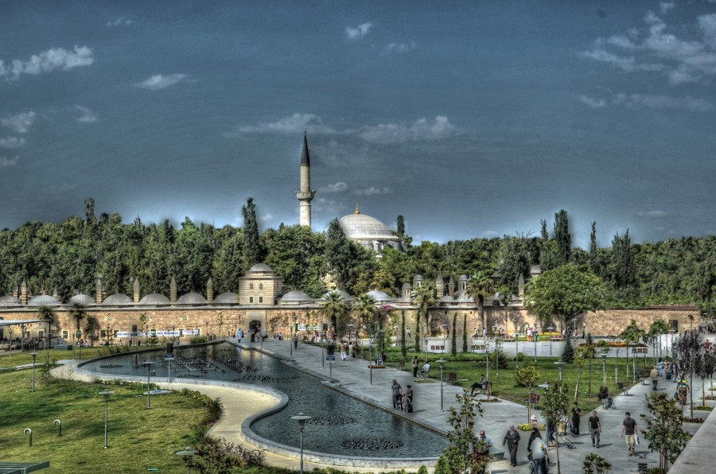
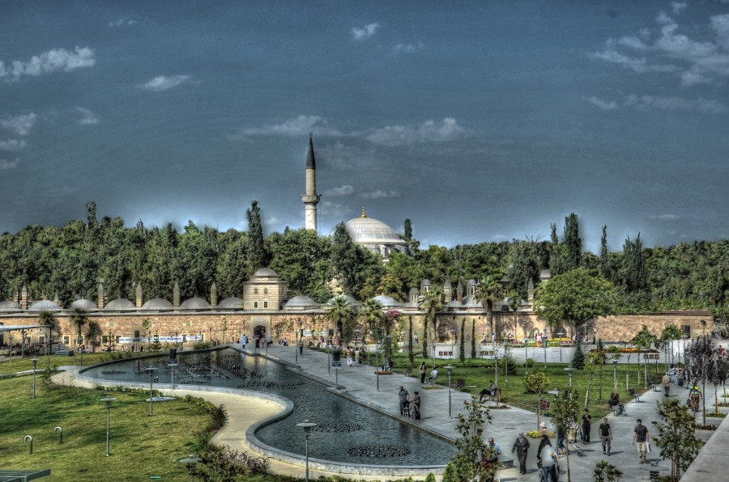

Hakkımda
16 Haziran 1999'da Üsküdar'da doğdum. Ülkün Yalçın Anadolu Lisesi'nden 2017'de mezun oldum.
Şu an Sakarya Üniversitesi'nde bilgisayar mühendisliği okuyorum.
Hobilerim ise,
16 Haziran 1999 yılında İstanbul Üsküdar’da Zeynep Kamil Hastanesi’nde doğdum.
Şu an tatillerde ailemle Gebze’de, okul zamanı ise Sakarya’daAyşe Hümeyra Ökten
Kız Öğrenci Yurdu’nda kalıyorum.
Annemin, hamileliğinde sarılık hastalığı geçirmesi
sebebiyle benim de geçirmemem için doğar doğmaz iğnesini oldum.
Saçımın rengini
güneşte başak sarısına benzeten babaannem bu sebeple adımı “Başak” koydu. İki
yaşımda adı Beyza olan
ilk arkadaşımla tanıştım. Daha sonra başka arkadaşlarım da
oldu ve güzel bir oyun dönemi geçirdim.
Altı yaşıma geldiğimde jimnastik kursuna gittim.
Birkaç ay devam ettikten sonra kurs kapandı. O zamanlarda kazandığım
esnekliğim
daha sonra da spor yaparken oldukça işime yaradı. Yedi yaşımda o zamanlar adı Diler
Demir İlköğretim Okulu’na başladım.
Aynı zamanda o yıl voleybola başladım. On bir
yaşıma kadar her yıl voleybol turnuvalarına katılıp madalya aldım.
On birimde ise
voleybolu bıraktım. Yedinci sınıfa geçtiğimde hayatımda ilk kez gittiğim dershane olan
Kavram Dershanesi’ne başladım.
Sekizinci sınıfta ise şu an kapatılmış olan Fatih Dersha-
nesi’ne gittim. Sekizinci sınıfın sonunda SBS sınavına girdim.
O sınavda 500 üzerinden
408 puanla %8’lik dilime girdim ve Darıca Ülkün Yalçın Anadolu Lisesi’ne girdim.
Onuncu
sınıfta okulun tiyatrosuna girdim ve “Ah Şu Gençler” oyununda gelin rolünde ve suflör
olarak görev aldım.
On birinci sınıfta lisede ilk kez takdir belgesi aldım. On ikinci sınıfta
Final Dershanesi’ne gittim ve martta YGS,
haziranda LYS sınavına girdim. O yıl 69 binlik
sıralamayla Sakarya Üniversitesi’nde Bilgisayar ve Bilişim Bilimleri Fakültesi’nde
Bilgisayar
Mühendisliği bölümünü kazandım. Bir yıl Yabancı Diller Bölümü’nde İngilizce hazırlık okudum.
Sene sonunda Versant sınavından
B2 seviyesini alarak hazırlıktan mezun oldum. Şu an
bilgisayar mühendisliği birinci sınıfta okumaktayım.
| Okul Türü | Okul Adı |
|---|---|
| İlköğretim | Diler Demir İlköğretim okulu |
| Lise | Ülkün Yalçın Anadolu Lisesi |
| Üniversite | Sakarya Üniversitesi- Bilgisayar Mühendisliği |

 

Gebze, Marmara Bölgesinde İzmit'e bağlı Türkiye'nin en büyük sanayi yerleşimlerinden biridir.
İstanbul'a 49, İzmit'e 45 km uzaklıkta bir sanayi şehri olmasından dolayı Gebze çok göç alan yerlerdendir.
Dolayısıyla son yıllarda hızla artışa geçmiştir. 2013'te 329 bin civarında olan nüfus, 2017'de 357 bini aşmıştır.
Gebze'de gezilebilecek yerler ise şunlardır; Çoban Mustafa Paşa Cami, Sultan Orhan Cami, Osman Hamdi Bey Evi Ve Müzesi,
Eskihisar Kalesi, Darıca Kalesi ve Anibal'ın Mezarıdır.
| Kuruluş | 1955 |
| Renkler | Mor-Beyaz |
| Başkan | Abbas Sır |
| Teknik Direktör | Özgür Vurur |
| Lig | Bölgesel Amatör Lig |
| Stadyum | Gebze Alaettin Kurt Stadyumu |
1955 yılında Rafet Yüce ve Aziz Saka öncülüğünde, Rıza Hoşsöz, Fehmi Bora, Necmi Berberoğlu, Neşe Koranoz, Mazhar Erdemi ve Ahmet Ataç'tan oluşan 6 yönetici, 1 Başkan Yrd. ve Başkan'dan oluşan toplam 8 kişilik bir yönetim kuruluyla Türk spor hayatına merhaba diyen Gebzespor Kulübü, futbol macerasına ilk olarak Kocaeli Amatör Ligi'nde başlar. Söylentilere göre Gebzespor Kulübü'nün kadrosu o zamanlarda kahvehanelerdeki semt sakinleri, esnaflar ve işçilerden oluşmaktaydı. Yaklaşık 20 yıl boyunca Kocaeli Amatör Ligi' nde bir başarı elde edemeyen Gebzespor Kulübü 20. yılında birçok iş adamı, devlet memuru, askeri personel ve semt sakinlerinin maddi destekleriyle ekonomisini güçlendirir. Bu sayede kurduğu alt yapısıyla gelecek için yatırımlar yapmış olan Gebzespor Kulübü 1960-1974 yılları aralığında büyük bir gelişme kat ederek Kocaeli 2.Amatör ve 1.Amatör Küme Ligi'nde ardı ardına şampiyon olarak, günümüz 3. Lig seviyesinde olan 2. Lig'e çıkmıştır.[kaynak belirtilmeli] 1974 sezonu Gebzespor Kulübü için bir dönüm noktası olmuştu. Kulübün 2. Lig'e çıkması ilçede kulübe olan sempatiyi artırmıştı. 1980'li yıllara gelindiğinde taraftar desteği kabul edilebilir düzeyde artıyordu. 1984'te Şendoğan Tezyüksel, İlhan Özler, Mustafa Kırcalı ve Turan Nalbant Gebze Anadolu Bankası'nın verdiği 15 milyon Lira'lık krediye teminat almışlardır. Gebzespor 1984'te resmen profesyonel bir takım olmuştur ve bu Gebze için ikinci bir dönüm noktası oluşturmaktaydı. Türkiye Futbol Federasyonu'nun aldığı karar doğrultusunda o zamanlar yeni açılan 3. Lig'de uzun süre mücadele eden Gebzespor, 50. yılında Şevki Demirci'nin başkanlığında şampiyon olarak 2. Lig'e terfi etmiştir. 2010-2011 sezonunda 3. Lig'e tekrar düşmüştür. 2011-2012 ve 2012-2013 sezonu 3. Lig' de mücadele etmiştir ve 2012-2013 sezonu sonunda BAL ligine düşmüştür, 2013-14 - 2017-18 sezonları arasında BAL liginde mücadele etti. 2017-18 sezonunu 11. grupta lider bitiren Gebzespor Yeni Eskişehir Stadyumu'nda Altınova Belediyespor ile oynadığı play-off maçını 90+3. dakikada Oğuz Başaran'ın attığı golle 5 sezon aradan sonra 3. Lig'e geri döndü. 30 Haziran 2018 tarihinde yapılan genel kurulda Abbas Sır kulüp başkanlığına seçildi.